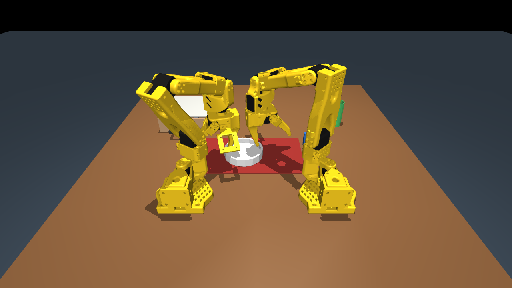
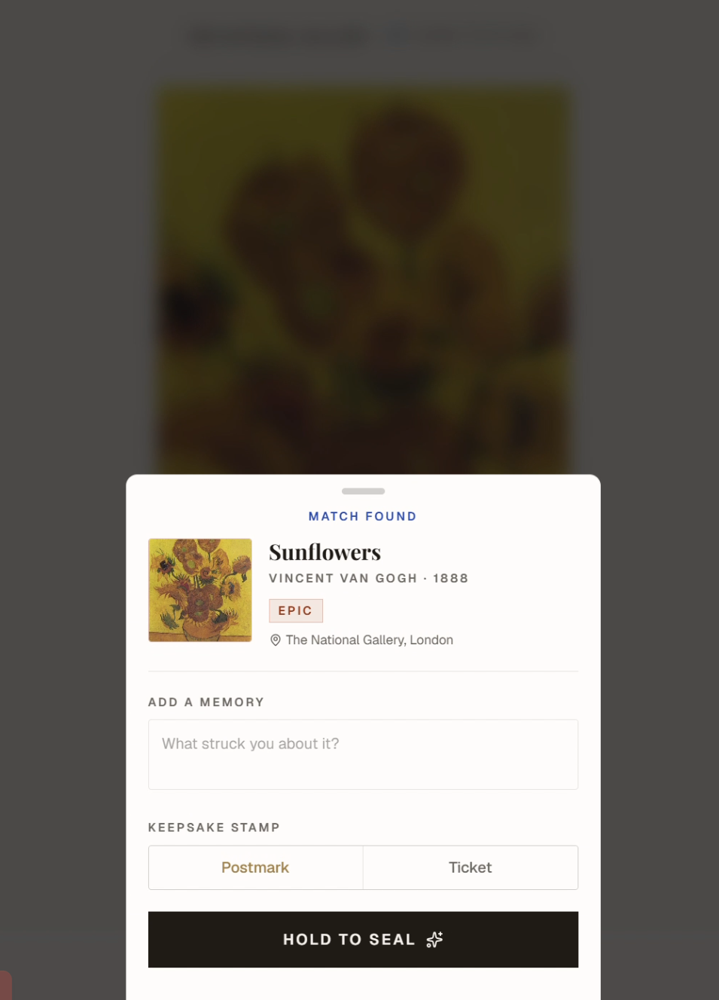
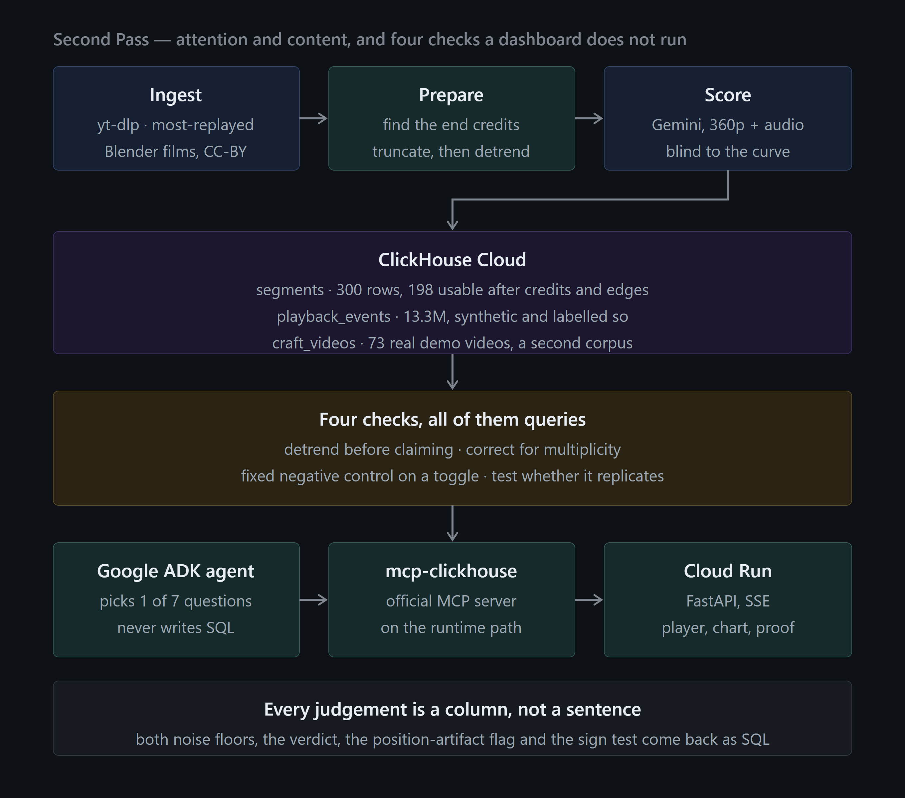

Suzy Su苏紫薇 · Suzy SuLondon, UK / Selected work 2026英国伦敦 / 精选作品 2026
Game designer moving into applied AI. I bring two shipped mobile titles and hands-on work in LLM applications, evaluation and developer tools.从游戏设计拓展到应用 AI 工程。参与两款已上线手游，通过 LLM 应用、评测和开发者工具积累工程实践。
AI Engineering& Evaluation应用 AI& 工程实践



THE PERSON BEHIND THE WORK作品背后的我
From game systems to AI systems.从游戏系统设计，到 AI 工程实践。
My background is F2P systems, economy and monetisation design: defining rules, handling edge cases and checking behaviour in use. I bring that approach to building and evaluating LLM applications.
我的背景是 F2P 系统、经济与商业化设计：定义规则、处理边界情况，并检查实际表现。我把这套方法用于 LLM 应用开发与评测。
At work, I built a playtest engine and helped colleagues use AI coding tools. The public projects below document my AI-assisted engineering practice, with contributions, test results and deployment limits stated for each.
在工作中，我搭建了走查引擎，并帮助同事使用 AI 编码工具。下方公开项目展示我的 AI 辅助工程实践，分别说明个人工作、测试结果和部署边界。
- Based in所在地
- London, UK英国 · 伦敦
- Education教育背景
- MA Game Design
UAL · London College of Communication, 2023游戏设计硕士
伦敦艺术大学 · 伦敦传媒学院，2023 - BE Engineering Geology
Jilin University, 2020工程地质工学学士
吉林大学，2020 - Languages语言
- Mandarin · native
English · working proficiency中文 · 母语
英文 · 工作语言
Selected work.精选作品。
Project index · 7项目目录 · 7Browse展开查看
second-pass A query-grounded analytics agent基于真实查询的分析 agent
My work我的工作
I built a Gemini agent that answers through real ClickHouse queries via MCP. FastAPI, Docker, Cloud Run and Secret Manager support the service; CI tests behaviour and builds the image. Per-call traces record tokens, model latency and estimated cost.
我构建 Gemini agent，通过 MCP 执行真实 ClickHouse 查询后回答。服务使用 FastAPI、Docker、Cloud Run 与 Secret Manager；CI 测试服务行为并构建镜像。逐次模型调用记录 token、延迟与估算成本。
Measured 22 Oct 2026: 10 independent runs of the same question / 20 model calls, laptop client and local ClickHouse; estimated at published model prices. Not production latency. The research hypothesis did not replicate across three films and 18 corrected tests; the case notes explain the result.
2026 年 10 月 22 日测量：同一个问题独立运行 10 次，共 20 次模型调用，笔记本客户端与本地 ClickHouse；按公开模型价格估算。不是生产环境延迟。研究假设在三部片、18 项校正检验中未能复现，案例文档解释了结果。
Show Your Marks Every mark has evidence每一分都有依据

My work我的工作
I developed a consultation-practice prototype that separates the rubric judge from the simulated patient. Code controls fact access; every awarded mark links back to the dialogue that earned it.
我开发模拟问诊练习原型，将评分裁判与模拟病人分离。代码控制事实访问，每个得分链接到对应对话证据。
Compared quality, latency and cost to select the judge. On one synthetic case, 24 adversarial prompts produced 1.33 leaked facts per attack in the full-context control and none in the guarded user-visible output. Per-session and daily spend caps limit model spend.
比较质量、延迟与成本后选择裁判。单个合成病例的 24 次攻击中，全量上下文对照组每次泄露 1.33 个锁定事实，守卫后的用户可见输出未观测到泄露。每局与每日设置模型花费上限。
Exact-line accuracy: the predicted set of rubric items matches the labelled set for a line. Scope: one synthetic case; no clinician review. These results do not establish clinical validity or general safety.精确行准确率：每句话预测的评分项集合与标注集合完全一致的比例。范围：单个合成病例，未经临床审核。上述结果不代表临床有效性或普遍安全性。
ArtDex Vision product on AWSAWS 上的视觉识别应用
My work我的工作
I built a museum companion: photograph an artwork, Claude vision on Bedrock identifies it, and the visit is saved to a personal collection. GPS narrows the candidates and manual search is the fallback when recognition is unsure. Built on Next.js with DynamoDB and S3; photos stay private and the browser only gets short-lived presigned URLs.
我开发博物馆伴游应用：拍下作品，Bedrock 上的 Claude 视觉模型识别出是哪一件，这次参观就存进个人收藏。GPS 先缩小候选范围，识别没把握时可以手动搜索。基于 Next.js、DynamoDB 和 S3；照片保持私有，浏览器只拿到短时有效的预签名链接。
table-for-two Learned robot policy学习型机器人策略
My work我的工作
I evaluated the learned policy against a scripted baseline: 10 evaluation seeds plus 30 never-seen seeds, with a Wilson confidence interval on every success rate. The learned policy scored 0/10 on the full table task, reported with the reasons, against a scripted pipeline at 10/10. INT8 quantisation cut CPU inference from 16.5 ms to 4.9 ms. Submitted to the Intel Physical AI Online Challenge.
我将学习策略与脚本基线对照评测：10 个评测种子加 30 个从没见过的种子，每个成功率都带 Wilson 置信区间。学习策略在完整任务上 0/10，照实汇报并解释原因，脚本流程为 10/10。INT8 量化把 CPU 推理从 16.5 ms 降到 4.9 ms。已提交到 Intel Physical AI 线上挑战赛。
evidence-first-job-search
My work我的工作
I built a public job-search workflow with AI coding assistants. An LLM reviewer scores a CV against a five-dimension rubric with a truthfulness veto, in a separate session from the model that wrote it; rule-based checks flag unsupported numbers, skill terms and metric abbreviations against a fact base; they do not verify every claim in context. Command-line tools check the UK sponsor register. 190 tests at 97% coverage, CI on Ubuntu and Windows with Python 3.10 and 3.12.
我借助 AI 编码助手开发公开求职工作流。LLM 评审按五个维度的评分标准给简历打分，「真实性」一项可一票否决，而且在和写稿模型分开的会话里运行；之后用规则检查事实库中找不到的数字、技能词和指标缩写；它不能逐句验证完整语义。另有查询英国担保名册的命令行工具。190 个测试、覆盖率 97%，CI 跑在 Ubuntu 和 Windows、Python 3.10 和 3.12 上。
gridbot Black-box test automation黑盒自动化测试
My work我的工作
I built black-box UI testing tools for Android builds that UIAutomator and Appium can't reach. pytest and ruff run in GitHub Actions across Python 3.9–3.12, and the README states the framework's limits, including 50–500 ms OCR latency.
我为 UIAutomator 和 Appium 读不到的 Android 版本开发黑盒界面测试工具。GitHub Actions 跑 pytest 和 ruff，覆盖 Python 3.9–3.12；README 写明了框架的局限，包括 50–500 ms 的 OCR 延迟。
Roll Call Group-chat story game群聊分支剧情游戏

My contribution · team project我的贡献 · 团队项目
A two-person project with Xiaomin Fan, awarded “Best Product Integration with Z.ai” at VibeHack London 2026. I contributed to game design, frontend development, testing and integration. The project uses Next.js, TypeScript and Zod, with 128 tests. We used Claude Code on GLM; the game runs on pre-written branches and deterministic logic.
与 Xiaomin Fan 合作的双人项目，获 VibeHack London 2026「Best Product Integration with Z.ai」。我参与玩法设计、前端开发、测试与集成；项目使用 Next.js、TypeScript 和 Zod，共有 128 个测试。借助 Claude Code（GLM 模型）开发，游戏运行预写分支与确定性逻辑。
At work工作中
From a live F2P mobile title; studio and game are anonymised and nothing here links to private code.
来自一款已上线的 F2P 手游；工作室和游戏名已匿名，这里不链接任何私有代码。
AI playtest on a live build在线上版本上做 AI 走查
A general-purpose playtest engine of my own, with all game-specific knowledge in swappable profiles; it has run across six titles and versions, including an externally published game. On a live build the first run produced 13 severity-ranked findings with repro evidence. When a recording subsystem silently wrote empty files, I marked the cause unconfirmed and downgraded the two findings that depended on playback.
自建的通用走查引擎，和具体游戏相关的知识都放在可替换的配置里，已在六个游戏和版本上跑过，其中一个是外部已上线的游戏。在线上版本上第一次运行就产出 13 条按严重程度分级、带复现证据的问题。录像子系统悄悄写出空文件时，我把原因标为「未确认」，并把依赖录像的两条结论主动降级。
AI coding assistants for a design team给策划团队配置 AI 编码助手
Wrote shared rule files, shared skills and commands, and workflows for AI coding assistants, and helped colleagues get started.
为 AI 编码助手写共享规则文件、共享 skill 和命令、搭工作流，并带同事上手。
Skills, with evidence.能力与证据。
| Skill能力 | Where to look对应案例 |
|---|---|
| LLM applicationsLLM 应用 | second-pass ↗ MCP queries and an API serviceMCP 查询与 API 服务 |
| Evaluation & model choice评测与模型选择 | Show Your Marks ↗ Rubric scoring, adversarial tests and cost comparison评分标准、对抗测试与成本比较 |
| Deployment & data access部署与数据访问 | ArtDex ↗ Bedrock integration and private image accessBedrock 集成与私有图片访问 |
| Testing & CI测试与持续集成 | evidence-first-job-search ↗ Automated checks and cross-platform CI自动检查与跨平台 CI |
| Performance & failure analysis性能与失败分析 | table-for-two ↗ Held-out evaluation and CPU quantisation留出评测与 CPU 量化 |
| Professional practice工作中的应用 | At work工作实践 ↗ Playtest tooling and team workflows走查工具与团队工作流 |
Full toolset完整工具与方法清单
Python · TypeScript · FastAPI · Pydantic and Zod structured outputs · Claude API, Gemini API (Google ADK) · MCP integration · LLM-as-judge with rubrics · statistical testing (Bonferroni, Wilson intervals) · pytest, Vitest, GitHub Actions · Docker · GCP Cloud Run · AWS Bedrock, DynamoDB, S3 · OpenVINO quantisation · Claude Code and Cursor
Python · TypeScript · FastAPI · Pydantic 与 Zod 结构化输出 · Claude API、Gemini API（Google ADK）· MCP 集成 · 基于评分标准的 LLM 评审 · 统计检验（Bonferroni、Wilson 区间）· pytest、Vitest、GitHub Actions · Docker · GCP Cloud Run · AWS Bedrock、DynamoDB、S3 · OpenVINO 量化 · Claude Code 与 Cursor
Contact联系
Open to applied AI engineer and AI evaluation roles in London. Email suzysu418@gmail.com for my CV.
正在寻找伦敦的应用 AI 工程、AI 评测岗位。简历请邮件索取：suzysu418@gmail.com。